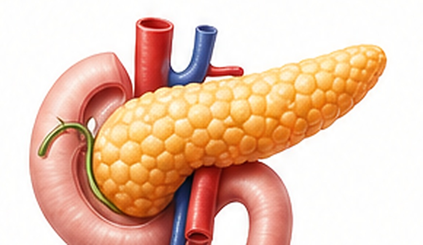

二、血糖代谢与胰岛功能深度评估

1
血糖相关指标详解
| 检测项目 | 实测值 | 参考范围 | 单位 | 状态 |
|---|---|---|---|---|
| 空腹血糖 (GLU) | 5.72 | 3.9--6.1 | mmol/L | 正常 |
| 糖化血红蛋白 A1C | 5.5 | 4.2--6.2 | % | 正常 |
| 平均血糖 | 6.20 | 3.77--6.95 | mmol/L | 正常 |
2
胰岛功能评估
胰岛素 (Ins)
10.85uU/mL
正常参考值：3--25C肽 (C-P)
1.43ng/mL
正常参考值：0.81--3.85智能解读
血糖相关指标和胰岛功能指标需要结合空腹血糖、糖化血红蛋白、胰岛素和C肽综合判断。当前为AI辅助解读内容，需由健康管理师复核。